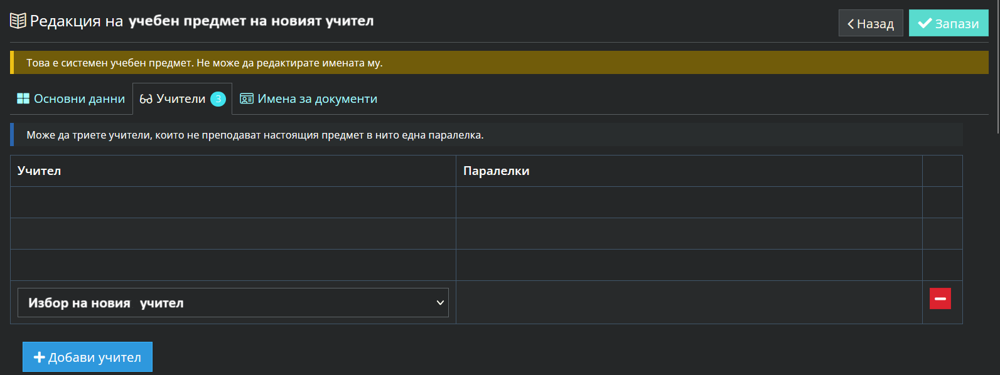
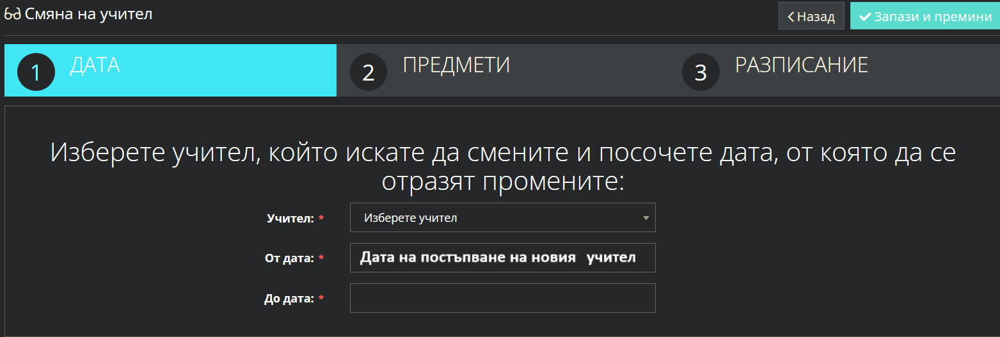
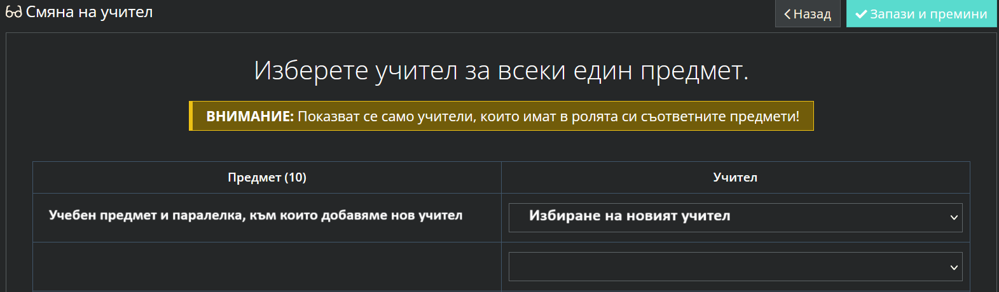
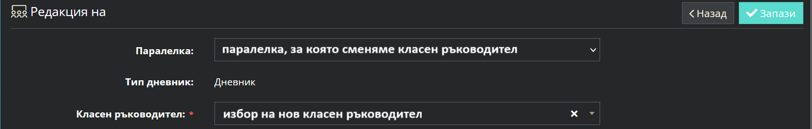
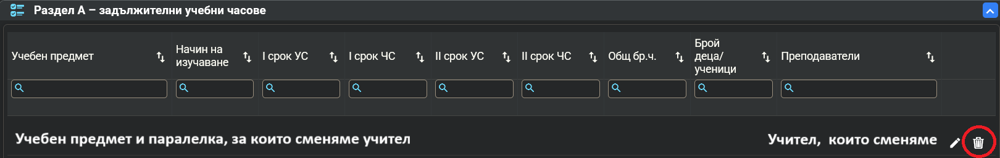
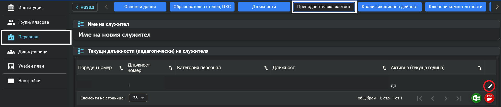
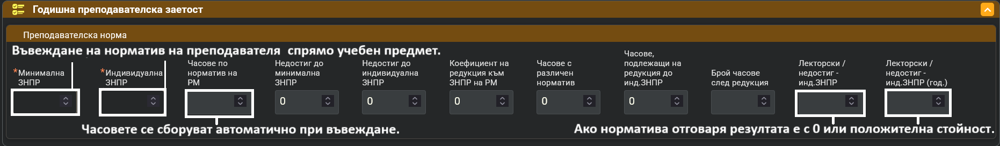
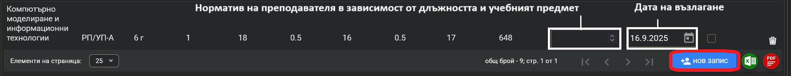
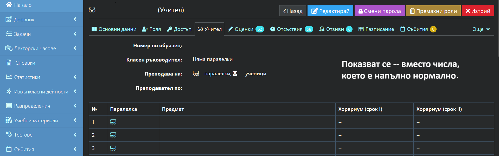
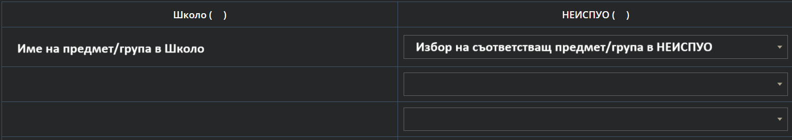

Смяна на учител по време на учебната година след импорт на Образец 1 от НЕИСПУО
1. Създаване на профил на новопостъпилият учител
shkolo.bg -> Администрация -> Потребители -> Добави
2. Добавяне на новият учител към предмета:
shkolo.bg -> Администрация -> Класове -> Предмети -> Редакция на предмет -> Добави учител -> Избор от падащото меню

3. Добавяне на новият учител към паралелки:
shkolo.bg -> Администрация -> Паралелки -> Смени учител:
- Избираме учителят, който сменяме;
- Дата на постъпване на новият учител;
- Ако е за срок - крайна дата на срока. В противен случай не редактираме датата.

- избираме предметите за паралелките, на които заменяме учител и новият учител;

Готово, вече сме задали смяна на учител!
След настъпване на дата на смяната, можем да изтрием профила на сменения учител.
ВАЖНО:
Изтриваме акаунта на стария учител, НЕ ПРЕМАХВАМЕ РОЛИ!!!
В случай, че не проработи автоматизираната смяна на учител и разписание се прави ръчно:
3.1 Влизаме в редакция на всички разписания на паралелките, в които сменяме учител – от датата на напускане.
3.2 Дневник -> Паралелка -> Седмично разписание -> Редактирай ->
-> При нужда се разместват предмети
3.3 Избираме новият учител в разписанието от дясно на учебния предмет.
4. Ако смененият учител е бил класен е необходимо да сменим ръчно новият класен ръководител:
- Администрация -> Паралелка -> Редакция -> Основни данни ->
- Избор на нов класен ръководител от падащото меню -> Запамети;

Подробна инструкция от Школо за смяна на учител - https://help.shkolo.bg
Системата ще добави избрания от вас учител като титуляр по предмета
в съответните паралелки и ще създаде идентични групи.
Затова е важно след тази промяна да синхронизирате новите групи с тези от НЕИСПУО.
ако напускащият учител има създадени сборни групи, е необходимо ръчно
да създадете нови сборни групи с новия учител.
5. Промяна на учител в учебен план:
neispuo.mon.bg -> Образец 1 -> Основно меню -> Учебен план -> Избиране на клас ->
- Раздел А, Б или В или ЧИУП -> Редакция на учител и учебен предмет ->
- Норма на предмета -> Учител -> Изтриване на сменен учител ->
- Добавяне на нов (по-бавен вариант, може да се направи от стъпка 6)
- Норматив и Дата (пр. 15.09.2024) -> Запис

6. Промяна на преподавателска заетост:
neispuo.mon.bg -> Образец 1 -> Основно меню -> Персонал -> Избор на учител (за всеки с промяна)
- Преподавателска заетост -> Редакция -> Нов запис -> Освободените предмети излизат автоматично;
- Задаване на норма на предмета за преподавателя и дата на възлагане;
- Запази (за да се отразят промените) -> Отваряне отново и проверка на норматив.



*Прави се проверка на всеки учител по този начин, за да се провери дали излиза норматива.
*Възможно е да има леки разминавания в норматива, ако е по време на учебната година.
7. В НЕИСПУО класен ръководител се въвежда при възлагане на часове по предмета - Час на класа
8. Хорариум на учител в Школо - НЕ СЕ РЕДАКТИРА
- Администрация -> Предмети -> Избор на предмет -> Избор на нов учител -> Учител
- секция "Предмети и учители" ще видите, че новият учител няма въведен хорариум.
Това е така, защото хорирумът е за предмет. Ако въведете и за новия учител хорариум,
при генериране на ученически документи ще се генерира двоен хорариум.

9. Синхронизиране на паралелки между Школо и НЕИСПУО
- Администрация -> МОН -> Синхронизиране на групи -> Избор на паралелки с извършени промени ->
- Избор на предмет/група за синхронизация -> Избор на съответен предмет/група в НЕИСПУО ->
- Запази и премини -> Потвърди -> Готово! Синхронизацията е извършена и вече групите са обвързани.

- Ако липсва синхронизация между групите/предметите се оцветяват в червено и излиза надпис - Няма връзка.
- При необходимост от създаване на нова група, трябва да бъде създадена и в двете платформи с идентични имена.
Подробна инструкция от Школо за синхронизиране на групи с НЕИСПУО - https://help.shkolo.bg
Подробна инструкция от Школо за създаване на сборна група - https://help.shkolo.bg